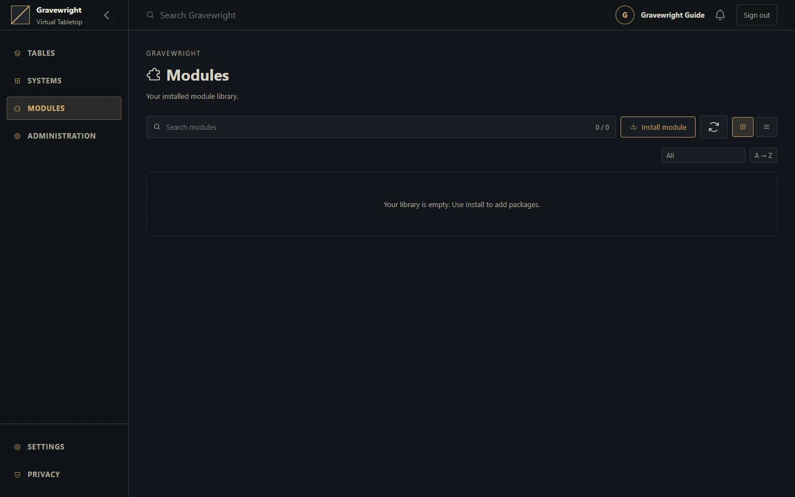

Systems, modules and the marketplace
Install trusted packages and understand the difference between host installation and table activation.


Choose the package type
| Type | Responsibility | Who selects it |
|---|---|---|
| RPG system | Sheets, document types and its own rules/content | Owner installs; campaign selects the system |
| Browser module | Table tools and interface extensions | Owner installs; GM activates for the table |
| Trusted Django app | Server-wide extension | Owner activates with a managed restart |
The native PDF system remains available without a marketplace. Installing a system does not include every book or catalog for that game.
Install a package
As installation owner, open Systems or Modules in the library.
Choose Install to browse the configured marketplace, or Install from ZIP for a local package you explicitly trust.
Inspect author, version, compatibility, permissions and license. Marketplace discovery shows the newest compatible, non-revoked release per package.
Wait for installation to finish, then refresh the installed library if the connection was interrupted.
Select the system for the campaign, or have its GM activate the browser module in Settings → Extensions.
Reload existing clients when required and test with both GM and player accounts.
Installing a new version does not automatically replace the exact release active in every table. Activation is a separate selection. Server apps require the owner's server-wide activation and managed restart.
Trust and language
Browser module JavaScript executes on the application's origin. Signatures validate package provenance and integrity; they do not sandbox the code. A local ZIP installation is the owner's trust decision and still undergoes archive and compatibility validation.
English is the default interface language. Available language packages/settings and system catalogs determine translations; user-authored names and notes are not translated automatically. Preserve each user's explicit language choice.
Troubleshoot
An empty marketplace may mean missing catalog/key configuration or unavailable networking; installed packages remain separate from discovery. Do not disable verification to fix a rejected archive. Confirm the host version and package requirements. Before changing a system, back up and inspect existing actor data and compendiums; switching systems does not automatically convert all documents into another RPG's format.